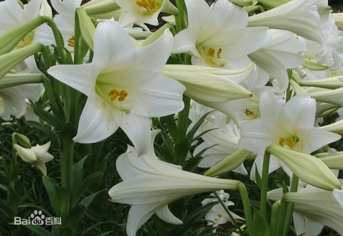

正确答案是C哦，你答对了吗
花语：在中国百合具有百年好合美好家庭、伟大的爱之含意，有深深祝福的意义。受到百合花祝福的人具有单纯天真的性格，集众人宠爱于一身，不过光凭这一点并不能平静度过一生，必须具备自制力，抵抗外界的诱惑，才能保持不被污染的纯真。
小故事：在中国古代，由于百合花盛开时，常常散发出淡淡幽香，因此在艺术创作中会把它和水仙、栀子、梅、菊、桂花和茉莉，合称七香图，深受人们的喜爱。百合花，在如今又被赋予“百年好合”“百事合意”的意义，是婚礼的常用花卉之一。在西方的基督教文化中，传说百合花原本是黄色的花瓣，直到被用来象征圣母玛利亚的纯洁，才逐渐变成了白色。在许多版本的圣母画中，都少不了百合这一象征。百合花的形态婀娜动人，高擎挺拔，散发清香，经常象征着女子的高洁自爱。
环科类2107-2022.3.10-T6
powered by ZH☆